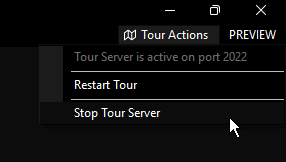

You have finished the Tour.
You have finished this tour. Now, you can do the following:
- If you wish to stay in this Tour a little bit longer, you can retrace your steps by rewatching one or more of the Tour videos (click one of the pictures on the top-right corner of your screen)
-
If you want to perform image tasks by yourself from now on, close this tab. Then, perform the following steps (versions 0.7.2 Preview 2 and later; 0.7.1 Update 1 and later, builds
25112and later):- Go back to DISMTools and then click the "Tour Actions" menu item
- Click "Stop Tour Server"

Alternatively, you can close the program to automatically shut down the tour server. A server had been started in the background to make watching the tour videos possible.
You can load the Tour at any time by going to Help > DISMTools Tour.